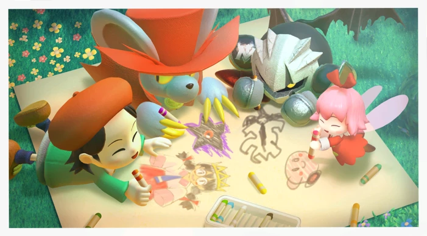
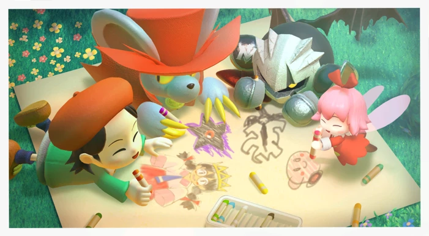

Kirby Star Allies Assignment: Production
Kirby Star Allies was developed by HAL Laboratory and published by triple A game company Nintendo. Its game engine is unknown, but people speculate that Star Allies' engine is built off of 2011's Kirby's Return to Dreamland's and 2016's Kirby Planet Robobot's engine due to the similarities between these games; its name is believed to be "Mint". The engine may go back even further; to the cancelled Kirby GameCube game that started development shortly after the completion of 2000's Kirby 64: The Crystal Shards. Kirby Star Allies reuses many concepts planned for Kirby GCN, such as the Cleaning ability, four player helpers, and Morpho Knight.
What the developers usually share from the production process is concept art. From minor enemies to final bosses to palette swaps of existing characters, many different designs are created before the team decides on a winner.
Kirby Star Allies was developed for the series' 25th anniversary, and this is reflected in the gameplay and narrative.
The gameplay combines mechanics from previous games that were loved by fans: the helper system from Super Star and references to the ability combining system from Kirby 64.
The narrative acts as a conclusion to the entire Kirby timeline up to that point.
Spoilers!
the Dark Lord Void Termina, Destroyer of Worlds and implied creator of all dark things, is saved from his evil nature. It is implied that Void Termina becomes Kirby, creating a conclusion by calling back to the beginning.Star Allies also received many post-launch updates which added the ability to play as characters from each of the main-series games.
 
